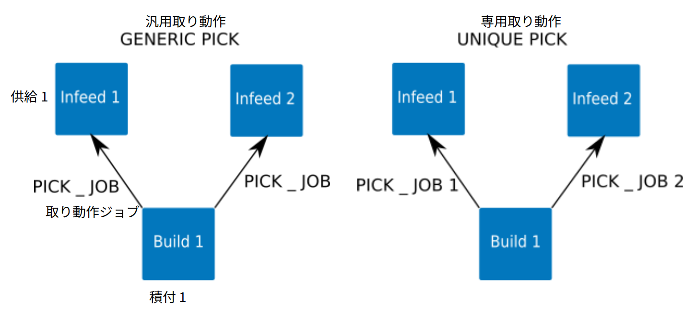

この画面では、取り動作/置き動作するジョブを作成できます。
最初に、名前、ステーション、製品を割り当てる必要があります。 これにより、選択した製品をどのように扱うかを決定するジョブが構築されます。 取り動作ジョブの場合、供給ステーションとディスペンサータイプのステーションのみが選択可能です。 置き動作ジョブは、積付ステーションへのアクセスのみを提供します。
パレットビルダーでは、[同様のステーションで使用] チェック製品(箱)を選択することで、ジョブを一般的なものにすることができます。 これにより、ユーザ座標系に関して同じタイプの別のステーションでジョブを使用できるようになります。 この機能では、ユーザ座標系に対する製品の位置が、すべての同様のステーションで同じである必要があります。 たとえば、ある取り動作の定義では製品を左側に、別の定義では製品が右側に整列している場合、この機能は使用できません。 この条件がなければ、次の図に示すように、各ステーションに固有のジョブが必要になります。

製品については、リストから製品を選択してください。 パレットをロボットで処理する場合、パレットを製品リストに表示するには、[製品管理] 画面でパレットにグリッパーが選択されている必要があります。置き動作ジョブの場合、サイズを正しく設定するには、パレットも選択する必要があります。 また、製品(箱)の場合、積みレイアウト(段) を編集ボタンを使用することで、製品(箱)のレイアウトと配置の順序を定義できます。 配置経路は、レイアウト(段)の最初の製品(箱)に対してのみ教示する必要があります。
ジョブ用のロボットの経路の設定に進む前に、経路内のポイント数を決定することをお勧めします。 パレットビルダーを使用すると、近接位置、退避位置の数を変更できます。 これは、隣接する製品との衝突を避けたり、より複雑な経路が必要な場合に使用できます。 単純な経路で良い場合、パレットビルダーには、[退避経路を近接経路の逆アプローチに設定] を使用して、近接経路(アプローチ)と、退避経路に同じ経路を使用する方法も用意されています。 これを有効にすると、近接経路と取り/置き経路のみを定義すれば良いです。退避経路は、近接経路から自動生成されます。
選択したステーションと製品に基づいて、基準の経路が生成されます。 その経路は、モーションの編集 ボタンを押して各ポイントを通過することで確認する必要があります。 経路のリセット ボタンを押すと、経路と経路構成を初期化して基準経路に戻すことができます。
メモ:
完了したら、セーブしてジョブを生成 ボタンを押してジョブを保存するか、キャンセル を押してジョブまたは変更を破棄します。